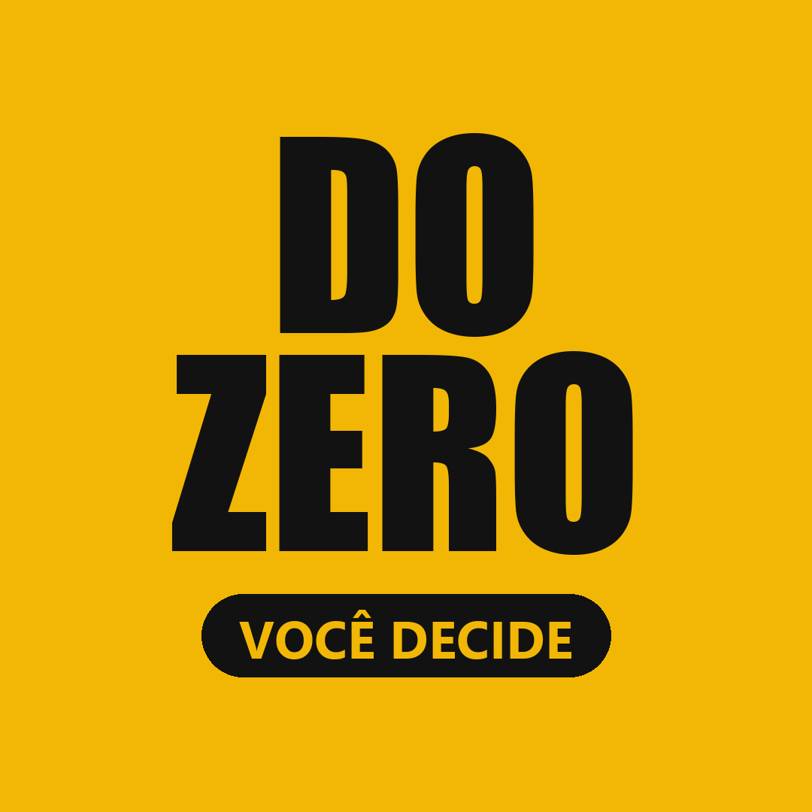

Do Zero: Você DecidePolítica de Privacidade
Última atualização: 16 de novembro de 2026.
1. Resumo
A ferramenta "Genio Do Zero" serve só para publicar os vídeos do próprio canal "Do Zero: Você Decide" nas nossas contas do TikTok, do Instagram e do Facebook. Ela não coleta dados de espectadores nem de outros usuários.
2. Dados que a ferramenta usa
- Tokens de acesso das nossas próprias contas, fornecidos pelo TikTok e pela Meta quando o administrador autoriza a ferramenta. Servem apenas para enviar e publicar os vídeos do canal.
- Informações básicas do perfil das nossas contas, como nome de usuário e ID, para confirmar em qual conta o vídeo será publicado.
Não coletamos, vendemos nem compartilhamos dados pessoais de terceiros.
3. Onde os dados ficam
Os tokens ficam guardados apenas no computador do administrador do canal, fora de qualquer servidor público, e são usados só para chamar as APIs oficiais do TikTok e da Meta.
4. Por quanto tempo
Os tokens ficam guardados enquanto a conexão estiver ativa. Ao desconectar a ferramenta, ou ao revogar o acesso nas configurações do TikTok ou da Meta, eles deixam de funcionar e são apagados.
5. Seus direitos (LGPD)
Como a ferramenta não trata dados de espectadores, normalmente não há dados seus conosco. Se tiver qualquer dúvida ou pedido sobre seus dados, fale com a gente e respondemos em até 15 dias.
6. Exclusão de dados
Para pedir a exclusão de qualquer dado, envie mensagem direta para @dozerovocedecide no Instagram com o assunto "Excluir dados".
7. Contato
Mensagem direta para @dozerovocedecide no Instagram.